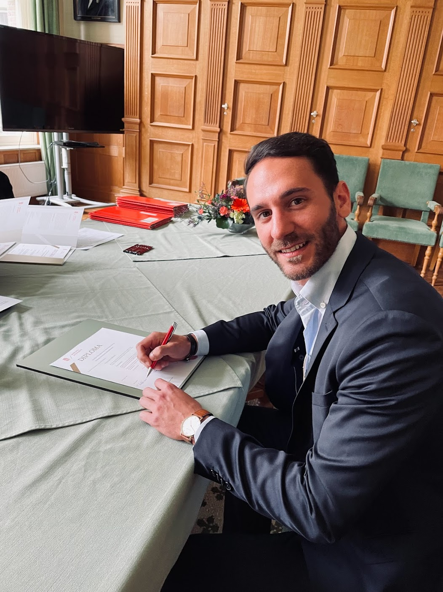

Francesco Febbraro
PhD Candidate in Economics, University of Groningen
I am a third-year PhD candidate in Economics at the University of Groningen. My research studies how banks and nonbank financial intermediaries transmit macro-financial shocks and reallocate credit across firms, combining granular supervisory data with high-frequency identification or network econometric techniques.
I will join the Bank of England Research Hub as a PhD research intern in summer 2026, working on a project involving global bond funds. I previously spent six months in the Financial Stability department of the Deutsche Bundesbank, and I am a member of the ESCB ChaMP research network.
Research focus
Nonbank financial intermediation.
How insurers, funds, and other nonbanks lend, and how their balance sheets and regulation make them behave differently from banks.
Monetary policy transmission.
How policy and term-structure surprises pass through bank and nonbank credit supply to reach firms.
Macro-financial shocks and financial stability.
How geopolitical and financial shocks propagate through the credit system, and what they imply for stability.
News
-
June 2026
Awarded a research grant from the Frankfurt Institute for Risk Management and Regulation (FIRM) for Banks, Nonbanks, and Geopolitical Shocks (co-recipient).
-
July - October 2026
Joining the Bank of England Research Hub.
Upcoming Presentations
-
2026
19th RGS Doctoral Conference (Bochum) · 2026 CEBRA Annual Meeting (Copenhagen) · 15th MoFiR Workshop on Banking (Varese) · IFABS 2026 (London)